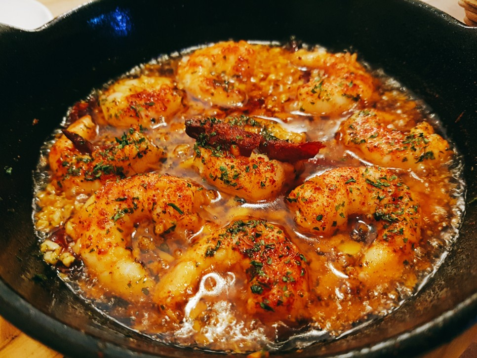

[ Gambas al ajillo ]
새우와 마늘, 올리브오일을 주재료로 하여 만든 스페인의 전채 요리(타파스).

감바스 알 아히요 조리법
- 새우를 준비하여 껍질과 머리, 내장 부분을 제거한 뒤 소금물에 씻어 둔다.
- 마늘은 편으로 썰어 놓고, 매운 고추는 다져 준비한다.
- 카수엘라에 올리브유를 넉넉히 두른 뒤 마늘을 넣어 튀기듯 볶아준다.
- 여기에 다진 고추와 새우를 넣어 천천히 구워낸다.
- 간은 소금과 후춧가루로 맞추며 마지막으로 파슬리를 뿌려준다.
- 냄비째 빵과 함께 낸 뒤 오일이 식기 전에 먹는다.